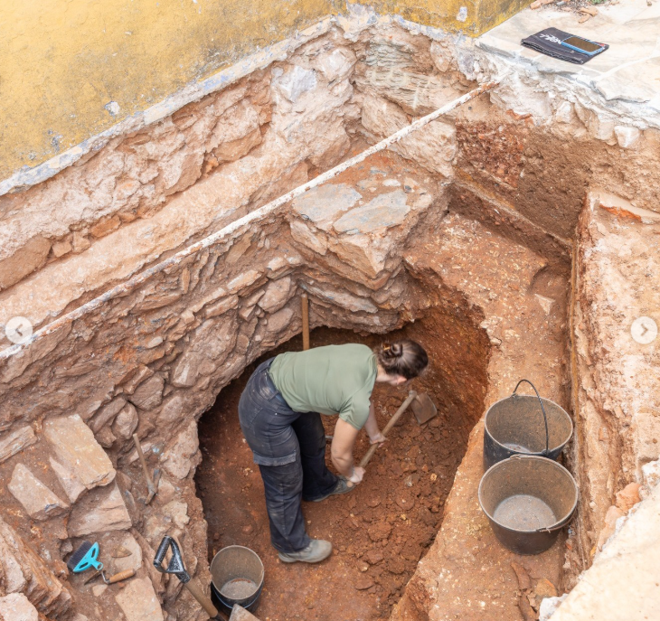

My journey as an archaeologist has been both challenging and rewarding. I have had the opportunity to participate in various excavations and research projects, which have allowed me to deepen my knowledge of ancient cultures and their practices.
I work with a team of archaeologists at a private companie called Cota 80.86. Our main logo is archaeology looking forward, meaning we are a young, dynamic, and agile team that ensures the implementation of archaeological projects or works in terrestrial and/or underwater environments. We have successfully completed numerous projects across different regions in Portugal.
I am always looking to expand my expertise and contribute to the field of archaeology in new and exciting ways.